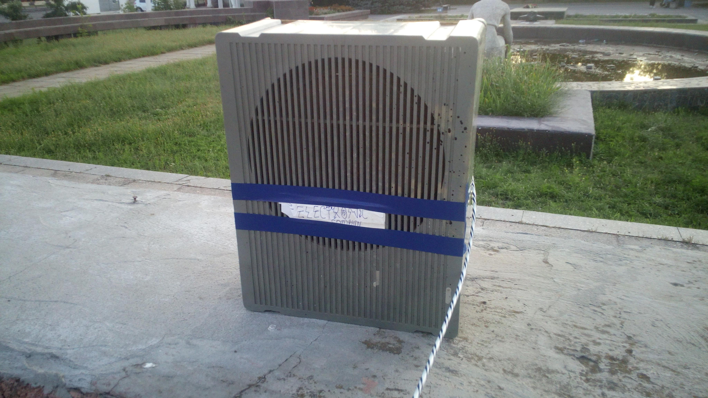
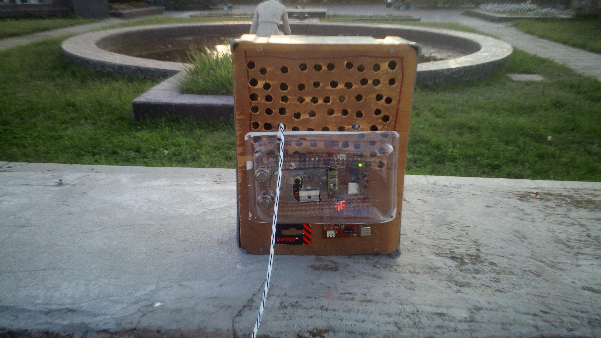

3D ELECTRONIC (англ. ЗД ЕЛЕКТРОНІЦ, буквально: Об'ємна електроніка) ФОРМАЛЬНА компанія яка займається ремонтом радіоапаратури, ПК техніки та багато іншого.
Історія нашої компаній починається аж у далекому 2017 - 2018 році. У 2017 році створено проект поки під невідомою назвою, аж поки у 2018 році майбутній засновник Литвиненко.І.О не придумав для проекту кодову назву під іменіем "3D ELECTRONIC", що обозначає як "Об'ємна електроніка", у якому, ця назва стане основною назвою для нашої компаній. Далі коли наступив 2019 рік, Литвиненко.І почав окунатися у світ радіоелекторніки, аж поки не наступив кінець 2019 року, в результаті якого вийшла перша успішна акустика 5АС-1019 у якому за основу було взято Акустичну систему "4АС-3", і означає що "5" - це потужність АС, у Ваттах, а "1019" - дата випуску, перші два цифри - це місяць, а останні два цифри - рік випуску, але це буде незабаром ... А поки поїдемо далі.
Коли наступив 2020 рік, компанія почала експериментувати із акусткою 5АС-1019, і модернізувати його під нові реалі. Також 3D ELECTRONIC займалася вивченням ПК тематики, і після цього, у подальшому це віришить долю нашої компаній 3D ELECTRONIC. І вже у 2021 році, 5АС-1019 стало один із успішних АС свого часу.
 Акустична система 5АС-1019
А далі почался 2022 рік, начебто не передбачало біди, але 24 лютого 2022 року почалася повномасштабна війна рашистів проти українського народу, але не дивячись на війну, та подальшу окупацію м.Херсон та смт.Чорнобаївка, компанія вистояла та розробляла нові та прості технології, і їх модернізувати. Окрім цього у 2023 році, у липні було створено нове сімейство акустичних систем під назвою " М14-"Х" ", яка повина замінити 5АС-1019, а саме покращити, так і гучність, так і АЧХ. Расшифровється як "М" - МАС, воно ж Малогабаритна Акустична Система, "14" - потужність, у Ваттах, а "Х" - конфігурація колонок, і їх поки існує дві а саме "1" та "2", тобто означає одна або обидві колонок, воно ж моно та стерео. Також на основі М14-"Х" було створено сабвуфер який призначався як підтримка акустиці М14-"Х" з метою розширення АЧХ у нижньому регістрі (від 40 до 120 Гц). Ну ладно... Тьфу ... Але це все теж скоро буде у окремому сторінці. Ну а поки, історія продовжується. Далі буде...